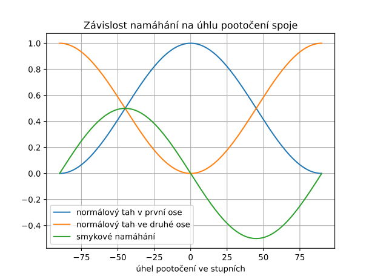

10. Vlastní čísla a směry#
Vlastní čísla umí numericky najít počítače, WolframAlpha, Python, Matlab, …
Pro Python ukázku výpočtu vygeneruje ChatGPT
Některé výpočty jsou v zápisníku pro Python.
10.1. Vektor, který není vlastním směrem#
Ukažte, že vektor \(\displaystyle \vec a= \begin{pmatrix} 1\\2 \end{pmatrix}\) není vlastním směrem matice
Řešení
Pomocí maticového násobení vidíme, že platí
Výsledkem zobrazení vektoru pomocí matice je vektor který není násobkem původního vektoru (podle první komponenty by se muselo jednat o trojnásobek, ale to nekoresponduje s druhou komponentou) a proto se nejedná o vlastní vektor matice.
10.2. Vektor, který je vlastním směrem#
Ukažte, že vektor \(\displaystyle \vec a= \begin{pmatrix} 2\\3 \end{pmatrix}\) je vlastním směrem matice
Řešení
Pomocí maticového násobení vidíme, že platí
Výsledkem zobrazení vektoru \(\displaystyle \vec a\) pomocí matice je vektor \(\displaystyle \begin{pmatrix} 12\\18\end{pmatrix},\) který je šestinásobkem původního vektoru \(\displaystyle \begin{pmatrix} 2\\3\end{pmatrix}\). Protože je obraz násobkem vzoru, jedná se o vlastní vektor matice. Příslušné vlastní číslo je \(\displaystyle 6\), protože se vektor zobrazuje na svůj šestinásobek.
10.3. Vlastní čísla a vektory matice \(\displaystyle 2\times 2\)#
Najděte vlastní čísla matice
Řešení
Vlastní čísla jsou nulovými body determinantu
Vlastní číslo \(\displaystyle \lambda_1=2\). Protože platí
Vlastní číslo \(\displaystyle \lambda_2=-3\). Protože platí
Poznámka. Protože je matice symetrická, jsou vlastní vektory na sebe kolmé. Proto není nutné druhý vektor počítat, ale stačí vzít libovolný vektor kolmý k prvnímu vlastnímu vektoru. V praxi tedy stačí vektoru \(\displaystyle \vec e_1\) prohodit komponenty a na první nebo druhé pozici změnit znaménko. Tím dostaneme vektor \(\displaystyle \vec e_2\).
10.4. Transformace matice \(\displaystyle 2\times 2\) na diagonální tvar#
Uvažujme symetrickou matici
Určete vlastní čísla a jednotkové vlastní vektory této matice.
Sestavte matici \(\displaystyle P\) tak, aby ve sloupcích obsahovala jednotkové vlastní vektory. Pokud je to možné, napište matici \(\displaystyle P\) tak, aby její determinant byl kladný.
Ověřte, že \(\displaystyle P^TAP=D\) je diagonální matice.
Návod: Vlastní vektory příslušné různým vlastním číslům jsou na sebe kolmé.
Řešení
Charakteristický polynom je
Pokud ještě před násobením matic vytkneme opakující se faktor z obou matic, násobením dostáváme
10.5. Poměr délky vzoru a obrazu vektoru#
Pro matici
Řešení
Platí
10.6. Transformace tenzoru pootočením#
Uvažujme tyč ve směru osy \(\displaystyle x\) namáhanou v ose tahem, při kterém vzniká jednotkové tahové napětí. Tyč je slepena spojem, který svírá s kolmicí na osu úhel \(\displaystyle \theta\). (Nakreslete si obrázek.) Normálovým napětím rozumíme napětí ve směru kolmém na spoj.
Ukažte, že pro nenulový úhel \(\displaystyle \theta\) je normálové napětí ve spoji menší, než by odpovídalo normálovém napětí pro spoj kolmý na osu tyče.
Ukažte, že normálové napětí je klesající funkcí úhlu \(\displaystyle \theta\) na intervalu od nuly do \(\displaystyle \frac \pi2\).
Určete normálové a smykové napětí pro extrémní případ \(\displaystyle \theta=\frac \pi 2\) a popište, jak by takový spoj vypadal.
Určete smykové napětí ve spoji a určte, pro jakou hodnotu úhlu je smykové napětí největší.
Určete, jestli je v tomto případě z hlediska působícího napětí výhodnější udělat šikmý spoj po směru nebo proti směru hodinových ručiček.
Řešení
V souřadné soustavě podle zadání je tah ve směru osy \(\displaystyle x\) roven jedné a další komponenty jsou nulové. Tedy \(\displaystyle \sigma=\begin{pmatrix} 1 & 0 \\ 0& 0\end{pmatrix}.\) Budeme otáčet proti směru hodinových ručiček, tj. o kladný úhel \(\displaystyle \theta\).
Dostáváme (při zkráceném označení \(\displaystyle S=\sin\theta\) a \(\displaystyle C=\cos\theta\))
Odsud již dostaneme odpovědi na všechny uvedené otázky.
Normálové napětí udává funkce
\[\cos^2\theta.\]Ta je rovna jedné pro \(\displaystyle \theta=0\), tj. pro nulový sklon spoje. Pro nenulový sklon je menší než jedna (uvažujeme sklon maximálně do 90 stupňů).Derivace normálového napětí pro \(\displaystyle \theta\) z intervalu od \(\displaystyle 0\) do \(\displaystyle \frac \pi2\) je
\[\frac{\mathrm d}{\mathrm d\theta}\cos^2{\theta}=2\cos\theta (-\sin\theta)=-\sin(2\theta)<0.\]Záporná derivace značí klesající funkci.Pro \(\displaystyle \theta=\frac \pi 2\) by normálové napětí bylo nulové a smykové také nulové. Jednalo by se vlastně o podélně spojené kusy materiálu a při uvedeném namáhání by bylo jedno, jestli jsou slepené nebo ne.
Smykové namáhání je prvek v matici mimo hlavní diagonálu. V našem případě \(\displaystyle -\frac 12 \sin(2\theta)\). Smykové namáhání je maximální, pokud má tato funkce maximum nebo minimum. Takový extrém je pro \(\displaystyle 2\theta=\frac \pi 2\) tj. pro \(\displaystyle \theta = \frac\pi4.\) Maximální smykové namáhání je pro spoj skloněný pod úhlem 45 stupňů.
Nezáleží. Změnou znaménka u úhlu \(\displaystyle \theta\) se napětí ve směru kolmo na spoj ani podél spoje nemění, funkce \(\displaystyle \cos^2\theta\) i \(\displaystyle \sin^2\theta\) jsou obě sudé. U smykového napětí se mění znaménko, ale to jenom znamená namáhání v opačném smyslu (Pokud si na stěnu materiálu nakreslíme čtvereček s jednou stranou podél spoje a s druhou stranou kolmo na spoj, podle směru sklonu spoje máme dva zrcadlové případy, jak se tento čtvereček deformuje. Tomu odpovídá opačné znaménko smykové derivace.)
Snadno je odpověď patrná i z obrázku, kde jsou vyneseny funkce z jednotlivých komponent transformovaného tenzoru.

10.7. Vlastní čísla a vektory matice \(\displaystyle 3\times 3\).#
V cvičení z minulého týdne jsme ukázali, že nejobecnější symetrická matice zachovávající směr vektoru \(\displaystyle (1,0,0)^T\) má v prvním řádku a prvním sloupci jenom jeden nenulový prvek, prvek v hlavní diagonále.
Uvažujme matici
Řešení
Podle zadání víme, že jeden z vlastních vektorů je \(\displaystyle e_1=(1,0,0)^T\) a protože se zobrazí na pětinásobek, je příslušná vlastní hodnota \(\displaystyle \lambda_1=5\). Charakteristický polynom je
Uvažujme matici
Uvažujme matici